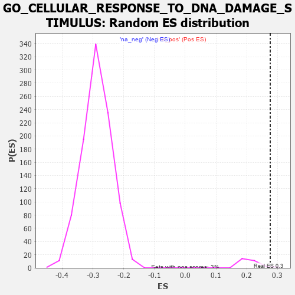

| | | Dataset | 7d |
| Phenotype | NoPhenotypeAvailable |
| Upregulated in class | na_pos |
| GeneSet | GO_CELLULAR_RESPONSE_TO_DNA_DAMAGE_STIMULUS |
| Enrichment Score (ES) | 0.27656245 |
| Normalized Enrichment Score (NES) | 1.2978793 |
| Nominal p-value | 0.035714287 |
| FDR q-value | 0.40435448 |
| FWER p-Value | 1.0 |
Table: GSEA Results Summary
 Fig 1: Enrichment plot: GO_CELLULAR_RESPONSE_TO_DNA_DAMAGE_STIMULUS
Fig 1: Enrichment plot: GO_CELLULAR_RESPONSE_TO_DNA_DAMAGE_STIMULUS
Profile of the Running ES Score & Positions of GeneSet Members on the Rank Ordered List
| PROBE | GENE SYMBOL | GENE_TITLE | RANK IN GENE LIST | RANK METRIC SCORE | RUNNING ES | CORE ENRICHMENT | | 1 | H2AX | | | 20 | 4.738 | 0.0355 | Yes |
| 2 | SPO11 | | | 35 | 3.371 | 0.0608 | Yes |
| 3 | PCBP4 | | | 44 | 2.875 | 0.0829 | Yes |
| 4 | BCL3 | | | 202 | 1.047 | 0.0710 | Yes |
| 5 | SWI5 | | | 203 | 1.045 | 0.0794 | Yes |
| 6 | SPDYA | | | 211 | 1.026 | 0.0867 | Yes |
| 7 | SFR1 | | | 235 | 0.969 | 0.0915 | Yes |
| 8 | CDC45 | | | 239 | 0.950 | 0.0988 | Yes |
| 9 | CCNH | | | 301 | 0.817 | 0.0974 | Yes |
| 10 | CNOT7 | | | 348 | 0.750 | 0.0975 | Yes |
| 11 | HUS1 | | | 362 | 0.735 | 0.1017 | Yes |
| 12 | CLSPN | | | 379 | 0.719 | 0.1054 | Yes |
| 13 | AXIN2 | | | 383 | 0.713 | 0.1108 | Yes |
| 14 | BAX | | | 387 | 0.711 | 0.1161 | Yes |
| 15 | NBN | | | 405 | 0.696 | 0.1195 | Yes |
| 16 | RAD9A | | | 418 | 0.681 | 0.1234 | Yes |
| 17 | MLH1 | | | 423 | 0.679 | 0.1284 | Yes |
| 18 | MCM10 | | | 427 | 0.673 | 0.1334 | Yes |
| 19 | CENPS | | | 439 | 0.666 | 0.1373 | Yes |
| 20 | ERCC1 | | | 453 | 0.660 | 0.1410 | Yes |
| 21 | CNOT6 | | | 462 | 0.655 | 0.1452 | Yes |
| 22 | WRN | | | 469 | 0.649 | 0.1496 | Yes |
| 23 | FAN1 | | | 477 | 0.645 | 0.1539 | Yes |
| 24 | RFC2 | | | 488 | 0.635 | 0.1577 | Yes |
| 25 | THOC1 | | | 507 | 0.627 | 0.1604 | Yes |
| 26 | CNOT2 | | | 514 | 0.625 | 0.1647 | Yes |
| 27 | MGME1 | | | 515 | 0.625 | 0.1697 | Yes |
| 28 | HTRA2 | | | 527 | 0.621 | 0.1733 | Yes |
| 29 | ASCC2 | | | 545 | 0.614 | 0.1760 | Yes |
| 30 | MCM2 | | | 546 | 0.614 | 0.1809 | Yes |
| 31 | MSH5 | | | 554 | 0.612 | 0.1850 | Yes |
| 32 | APEX1 | | | 577 | 0.604 | 0.1870 | Yes |
| 33 | CCNB1 | | | 581 | 0.601 | 0.1914 | Yes |
| 34 | RBL2 | | | 593 | 0.596 | 0.1948 | Yes |
| 35 | MCM7 | | | 612 | 0.591 | 0.1972 | Yes |
| 36 | MCM8 | | | 646 | 0.578 | 0.1976 | Yes |
| 37 | RFC3 | | | 663 | 0.571 | 0.2001 | Yes |
| 38 | CDK7 | | | 686 | 0.564 | 0.2018 | Yes |
| 39 | ATP23 | | | 691 | 0.562 | 0.2058 | Yes |
| 40 | MRE11 | | | 693 | 0.560 | 0.2102 | Yes |
| 41 | XRCC6 | | | 694 | 0.560 | 0.2147 | Yes |
| 42 | RAD21 | | | 779 | 0.538 | 0.2081 | Yes |
| 43 | EXD2 | | | 801 | 0.532 | 0.2097 | Yes |
| 44 | BLM | | | 804 | 0.531 | 0.2137 | Yes |
| 45 | RFC4 | | | 815 | 0.528 | 0.2166 | Yes |
| 46 | RPA1 | | | 817 | 0.527 | 0.2207 | Yes |
| 47 | TCEA1 | | | 821 | 0.526 | 0.2246 | Yes |
| 48 | PPIE | | | 842 | 0.521 | 0.2262 | Yes |
| 49 | RFWD3 | | | 843 | 0.521 | 0.2304 | Yes |
| 50 | RPA2 | | | 851 | 0.519 | 0.2336 | Yes |
| 51 | BAZ1B | | | 861 | 0.516 | 0.2366 | Yes |
| 52 | PARG | | | 884 | 0.509 | 0.2379 | Yes |
| 53 | RMI1 | | | 886 | 0.509 | 0.2418 | Yes |
| 54 | HMGB2 | | | 892 | 0.507 | 0.2453 | Yes |
| 55 | ARMT1 | | | 924 | 0.501 | 0.2453 | Yes |
| 56 | WDR48 | | | 975 | 0.489 | 0.2427 | Yes |
| 57 | MEN1 | | | 1003 | 0.483 | 0.2431 | Yes |
| 58 | REC8 | | | 1028 | 0.478 | 0.2438 | Yes |
| 59 | ISY1 | | | 1036 | 0.476 | 0.2468 | Yes |
| 60 | AKT1 | | | 1040 | 0.476 | 0.2502 | Yes |
| 61 | YAP1 | | | 1041 | 0.475 | 0.2540 | Yes |
| 62 | TAF9 | | | 1046 | 0.475 | 0.2573 | Yes |
| 63 | WDR70 | | | 1066 | 0.470 | 0.2586 | Yes |
| 64 | XPA | | | 1070 | 0.469 | 0.2620 | Yes |
| 65 | DEK | | | 1088 | 0.466 | 0.2636 | Yes |
| 66 | RAD51 | | | 1090 | 0.466 | 0.2672 | Yes |
| 67 | RINT1 | | | 1110 | 0.462 | 0.2684 | Yes |
| 68 | MCM3 | | | 1142 | 0.456 | 0.2681 | Yes |
| 69 | WDHD1 | | | 1172 | 0.451 | 0.2680 | Yes |
| 70 | ERCC3 | | | 1173 | 0.451 | 0.2716 | Yes |
| 71 | TFDP1 | | | 1180 | 0.450 | 0.2744 | Yes |
| 72 | KAT7 | | | 1240 | 0.440 | 0.2703 | Yes |
| 73 | CNOT3 | | | 1274 | 0.435 | 0.2695 | Yes |
| 74 | SSRP1 | | | 1323 | 0.424 | 0.2667 | Yes |
| 75 | PMS1 | | | 1356 | 0.418 | 0.2659 | Yes |
| 76 | WDR4 | | | 1399 | 0.410 | 0.2638 | Yes |
| 77 | APEX2 | | | 1410 | 0.408 | 0.2658 | Yes |
| 78 | CARM1 | | | 1413 | 0.408 | 0.2688 | Yes |
| 79 | PDS5B | | | 1432 | 0.403 | 0.2697 | Yes |
| 80 | RBX1 | | | 1445 | 0.401 | 0.2714 | Yes |
| 81 | ENDOV | | | 1491 | 0.391 | 0.2687 | Yes |
| 82 | UVSSA | | | 1496 | 0.391 | 0.2713 | Yes |
| 83 | E2F4 | | | 1501 | 0.390 | 0.2740 | Yes |
| 84 | MCM6 | | | 1506 | 0.389 | 0.2766 | Yes |
| 85 | FANCI | | | 1537 | 0.385 | 0.2758 | No |
| 86 | CCNK | | | 1596 | 0.374 | 0.2713 | No |
| 87 | DDB1 | | | 1642 | 0.366 | 0.2684 | No |
| 88 | ERCC8 | | | 1699 | 0.357 | 0.2640 | No |
| 89 | ERCC2 | | | 1712 | 0.354 | 0.2653 | No |
| 90 | MRNIP | | | 1743 | 0.346 | 0.2642 | No |
| 91 | RAD17 | | | 1804 | 0.336 | 0.2591 | No |
| 92 | FMR1 | | | 1816 | 0.334 | 0.2604 | No |
| 93 | MSH2 | | | 1819 | 0.334 | 0.2628 | No |
| 94 | UVRAG | | | 1831 | 0.332 | 0.2640 | No |
| 95 | OTUB1 | | | 1857 | 0.326 | 0.2634 | No |
| 96 | RBBP5 | | | 1875 | 0.323 | 0.2638 | No |
| 97 | MMS19 | | | 1924 | 0.317 | 0.2602 | No |
| 98 | EMSY | | | 1929 | 0.316 | 0.2622 | No |
| 99 | NFRKB | | | 1968 | 0.310 | 0.2598 | No |
| 100 | HELQ | | | 1982 | 0.307 | 0.2605 | No |
| 101 | POLH | | | 1983 | 0.307 | 0.2630 | No |
| 102 | MCRS1 | | | 1996 | 0.305 | 0.2639 | No |
| 103 | ASCC3 | | | 2000 | 0.305 | 0.2660 | No |
| 104 | EXO1 | | | 2002 | 0.304 | 0.2683 | No |
| 105 | FOXO4 | | | 2004 | 0.304 | 0.2706 | No |
| 106 | DMAP1 | | | 2025 | 0.301 | 0.2704 | No |
| 107 | HMCES | | | 2036 | 0.300 | 0.2716 | No |
| 108 | UBA6 | | | 2114 | 0.289 | 0.2639 | No |
| 109 | INO80 | | | 2120 | 0.288 | 0.2656 | No |
| 110 | TONSL | | | 2121 | 0.288 | 0.2679 | No |
| 111 | PSME4 | | | 2143 | 0.285 | 0.2675 | No |
| 112 | DTL | | | 2154 | 0.284 | 0.2684 | No |
| 113 | CNOT4 | | | 2161 | 0.283 | 0.2699 | No |
| 114 | MORC2 | | | 2171 | 0.281 | 0.2710 | No |
| 115 | UBE2A | | | 2183 | 0.278 | 0.2718 | No |
| 116 | ATAD5 | | | 2197 | 0.277 | 0.2724 | No |
| 117 | TIPRL | | | 2200 | 0.277 | 0.2744 | No |
| 118 | CDK2 | | | 2226 | 0.272 | 0.2733 | No |
| 119 | CBX1 | | | 2244 | 0.269 | 0.2733 | No |
| 120 | XRCC1 | | | 2287 | 0.262 | 0.2699 | No |
| 121 | CDC5L | | | 2353 | 0.253 | 0.2635 | No |
| 122 | MIF | | | 2357 | 0.252 | 0.2652 | No |
| 123 | HIPK2 | | | 2389 | 0.247 | 0.2632 | No |
| 124 | FEN1 | | | 2446 | 0.237 | 0.2578 | No |
| 125 | KDM1A | | | 2447 | 0.237 | 0.2597 | No |
| 126 | HUWE1 | | | 2506 | 0.225 | 0.2540 | No |
| 127 | RAD1 | | | 2528 | 0.223 | 0.2531 | No |
| 128 | VAV3 | | | 2614 | 0.210 | 0.2438 | No |
| 129 | KAT5 | | | 2644 | 0.206 | 0.2417 | No |
| 130 | ARID2 | | | 2664 | 0.204 | 0.2408 | No |
| 131 | MUS81 | | | 2673 | 0.202 | 0.2414 | No |
| 132 | MARF1 | | | 2704 | 0.198 | 0.2391 | No |
| 133 | DDX1 | | | 2718 | 0.196 | 0.2390 | No |
| 134 | NSD2 | | | 2784 | 0.185 | 0.2321 | No |
| 135 | ATR | | | 2800 | 0.183 | 0.2316 | No |
| 136 | EEPD1 | | | 2835 | 0.178 | 0.2287 | No |
| 137 | AQR | | | 2863 | 0.173 | 0.2265 | No |
| 138 | UCHL5 | | | 2864 | 0.172 | 0.2279 | No |
| 139 | NEK4 | | | 2915 | 0.164 | 0.2228 | No |
| 140 | RTEL1 | | | 3010 | 0.148 | 0.2118 | No |
| 141 | BRCA2 | | | 3024 | 0.146 | 0.2113 | No |
| 142 | PIAS4 | | | 3034 | 0.145 | 0.2113 | No |
| 143 | UFL1 | | | 3041 | 0.144 | 0.2116 | No |
| 144 | RBBP6 | | | 3066 | 0.141 | 0.2097 | No |
| 145 | TIGAR | | | 3091 | 0.138 | 0.2077 | No |
| 146 | CUL4A | | | 3097 | 0.137 | 0.2081 | No |
| 147 | TLK1 | | | 3098 | 0.137 | 0.2092 | No |
| 148 | REV1 | | | 3104 | 0.136 | 0.2097 | No |
| 149 | MDC1 | | | 3113 | 0.135 | 0.2097 | No |
| 150 | OGG1 | | | 3135 | 0.132 | 0.2081 | No |
| 151 | ASCC1 | | | 3146 | 0.131 | 0.2078 | No |
| 152 | FOXN3 | | | 3159 | 0.129 | 0.2073 | No |
| 153 | FZR1 | | | 3205 | 0.122 | 0.2024 | No |
| 154 | EME1 | | | 3246 | 0.114 | 0.1982 | No |
| 155 | PARP2 | | | 3316 | 0.103 | 0.1901 | No |
| 156 | RFC5 | | | 3389 | 0.091 | 0.1815 | No |
| 157 | RFC1 | | | 3437 | 0.085 | 0.1761 | No |
| 158 | CNOT1 | | | 3473 | 0.081 | 0.1722 | No |
| 159 | XPC | | | 3509 | 0.076 | 0.1683 | No |
| 160 | UBR5 | | | 3518 | 0.074 | 0.1678 | No |
| 161 | MAPK3 | | | 3589 | 0.062 | 0.1592 | No |
| 162 | WAC | | | 3618 | 0.056 | 0.1561 | No |
| 163 | CBL | | | 3621 | 0.056 | 0.1563 | No |
| 164 | SPRTN | | | 3651 | 0.051 | 0.1529 | No |
| 165 | DHX9 | | | 3693 | 0.044 | 0.1480 | No |
| 166 | SMC3 | | | 3701 | 0.042 | 0.1474 | No |
| 167 | HSF1 | | | 3718 | 0.039 | 0.1456 | No |
| 168 | CHD1L | | | 3819 | 0.024 | 0.1329 | No |
| 169 | SMG1 | | | 3843 | 0.021 | 0.1301 | No |
| 170 | NIPBL | | | 3900 | 0.010 | 0.1229 | No |
| 171 | HINFP | | | 3920 | 0.006 | 0.1205 | No |
| 172 | EYA1 | | | 3987 | -0.006 | 0.1120 | No |
| 173 | SYF2 | | | 4008 | -0.009 | 0.1095 | No |
| 174 | PARP1 | | | 4014 | -0.010 | 0.1089 | No |
| 175 | SFRP2 | | | 4065 | -0.018 | 0.1026 | No |
| 176 | ABL1 | | | 4125 | -0.027 | 0.0951 | No |
| 177 | MSH6 | | | 4129 | -0.028 | 0.0950 | No |
| 178 | MCM9 | | | 4163 | -0.036 | 0.0910 | No |
| 179 | MSH4 | | | 4176 | -0.038 | 0.0897 | No |
| 180 | TDG | | | 4290 | -0.058 | 0.0756 | No |
| 181 | HERC2 | | | 4302 | -0.060 | 0.0746 | No |
| 182 | SETD2 | | | 4443 | -0.084 | 0.0572 | No |
| 183 | NDRG1 | | | 4456 | -0.085 | 0.0563 | No |
| 184 | ERCC6 | | | 4464 | -0.087 | 0.0561 | No |
| 185 | SNW1 | | | 4514 | -0.096 | 0.0505 | No |
| 186 | APC | | | 4558 | -0.107 | 0.0458 | No |
| 187 | BAG6 | | | 4563 | -0.108 | 0.0462 | No |
| 188 | PNKP | | | 4572 | -0.111 | 0.0460 | No |
| 189 | ESCO2 | | | 4605 | -0.119 | 0.0428 | No |
| 190 | SMC1A | | | 4609 | -0.120 | 0.0434 | No |
| 191 | TTC5 | | | 4665 | -0.131 | 0.0373 | No |
| 192 | PPM1D | | | 4805 | -0.158 | 0.0206 | No |
| 193 | TAOK3 | | | 4823 | -0.162 | 0.0197 | No |
| 194 | TIPIN | | | 4839 | -0.166 | 0.0191 | No |
| 195 | SGK1 | | | 4852 | -0.168 | 0.0189 | No |
| 196 | CLU | | | 4889 | -0.174 | 0.0156 | No |
| 197 | TLK2 | | | 4909 | -0.179 | 0.0146 | No |
| 198 | CBX3 | | | 4923 | -0.183 | 0.0144 | No |
| 199 | ATRX | | | 4929 | -0.184 | 0.0152 | No |
| 200 | EP300 | | | 4941 | -0.186 | 0.0153 | No |
| 201 | XRCC5 | | | 4946 | -0.187 | 0.0163 | No |
| 202 | PRKDC | | | 4955 | -0.189 | 0.0168 | No |
| 203 | REV3L | | | 5051 | -0.209 | 0.0061 | No |
| 204 | ING4 | | | 5084 | -0.221 | 0.0038 | No |
| 205 | DDX11 | | | 5102 | -0.225 | 0.0034 | No |
| 206 | ATM | | | 5210 | -0.249 | -0.0085 | No |
| 207 | TOP2A | | | 5216 | -0.250 | -0.0071 | No |
| 208 | CDK1 | | | 5264 | -0.262 | -0.0111 | No |
| 209 | ERCC5 | | | 5284 | -0.268 | -0.0114 | No |
| 210 | RAD50 | | | 5314 | -0.276 | -0.0130 | No |
| 211 | PMS2 | | | 5583 | -0.340 | -0.0449 | No |
| 212 | SMYD2 | | | 5598 | -0.344 | -0.0440 | No |
| 213 | MEIOB | | | 5667 | -0.366 | -0.0499 | No |
| 214 | CDIP1 | | | 5684 | -0.370 | -0.0490 | No |
| 215 | FANCM | | | 5824 | -0.413 | -0.0636 | No |
| 216 | STK11 | | | 5922 | -0.443 | -0.0727 | No |
| 217 | CHD2 | | | 5930 | -0.445 | -0.0700 | No |
| 218 | JMY | | | 6023 | -0.479 | -0.0781 | No |
| 219 | POLK | | | 6041 | -0.486 | -0.0763 | No |
| 220 | PLK1 | | | 6082 | -0.500 | -0.0775 | No |
| 221 | UBB | | | 6090 | -0.503 | -0.0744 | No |
| 222 | STK33 | | | 6124 | -0.512 | -0.0745 | No |
| 223 | RNF8 | | | 6147 | -0.518 | -0.0732 | No |
| 224 | TFAP4 | | | 6254 | -0.556 | -0.0825 | No |
| 225 | UBA1 | | | 6263 | -0.559 | -0.0790 | No |
| 226 | ISG15 | | | 6385 | -0.608 | -0.0898 | No |
| 227 | NEK1 | | | 6402 | -0.618 | -0.0869 | No |
| 228 | UBE2N | | | 6407 | -0.621 | -0.0824 | No |
| 229 | DYRK2 | | | 6533 | -0.677 | -0.0932 | No |
| 230 | PIF1 | | | 6604 | -0.713 | -0.0965 | No |
| 231 | PAK1 | | | 6691 | -0.757 | -0.1016 | No |
| 232 | EGFR | | | 6708 | -0.765 | -0.0975 | No |
| 233 | AEN | | | 6852 | -0.842 | -0.1092 | No |
| 234 | DOT1L | | | 6939 | -0.897 | -0.1132 | No |
| 235 | CETN1 | | | 7073 | -0.978 | -0.1225 | No |
| 236 | DDX5 | | | 7152 | -1.037 | -0.1243 | No |
| 237 | UFD1 | | | 7157 | -1.040 | -0.1165 | No |
| 238 | CETN2 | | | 7200 | -1.070 | -0.1133 | No |
| 239 | REXO4 | | | 7253 | -1.126 | -0.1110 | No |
| 240 | CDK9 | | | 7266 | -1.138 | -0.1034 | No |
| 241 | CIB1 | | | 7280 | -1.152 | -0.0958 | No |
| 242 | PARP3 | | | 7289 | -1.158 | -0.0875 | No |
| 243 | SYCP1 | | | 7295 | -1.167 | -0.0788 | No |
| 244 | UBC | | | 7410 | -1.274 | -0.0833 | No |
| 245 | CASP2 | | | 7442 | -1.322 | -0.0767 | No |
| 246 | NEK11 | | | 7579 | -1.521 | -0.0821 | No |
| 247 | TAF1 | | | 7643 | -1.633 | -0.0771 | No |
| 248 | MYO6 | | | 7697 | -1.753 | -0.0699 | No |
| 249 | BOK | | | 7715 | -1.817 | -0.0575 | No |
| 250 | CASP3 | | | 7747 | -1.902 | -0.0462 | No |
| 251 | TRAF6 | | | 7818 | -2.157 | -0.0379 | No |
| 252 | WDR33 | | | 7939 | -3.452 | -0.0257 | No |
| 253 | XIAP | | | 7947 | -3.696 | 0.0031 | No |
Table: GSEA details [plain text format]

Fig 2: GO_CELLULAR_RESPONSE_TO_DNA_DAMAGE_STIMULUS: Random ES distribution
Gene set null distribution of ES for GO_CELLULAR_RESPONSE_TO_DNA_DAMAGE_STIMULUS